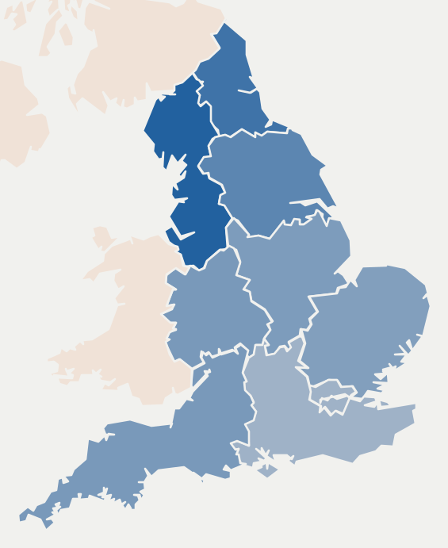
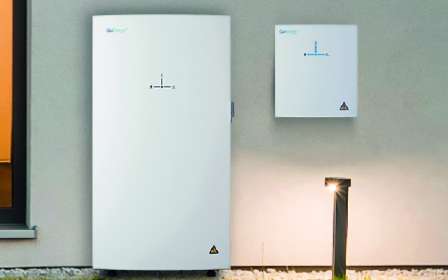

Hormuz Tracker
A live map of tanker traffic through the Strait of Hormuz, built when a single transit could move UK wholesale gas 12% in a session.
View live
Projects
A live map of tanker traffic through the Strait of Hormuz, built when a single transit could move UK wholesale gas 12% in a session.
View live
How much UK heat actually moves demand and price, and the risk a heatwave poses to retail suppliers.
Read the write-upAnalysis

A look at the chances of further damage after July's heatwave, and the initiatives in place to reduce the impact in future.
ReadOpinions
Data centres want a peak-Britain of grid connections. That demand may be the push into round-the-clock renewables we needed.
Read
Everyone's eyes are on the front of the business. A trade-desk view of what home batteries do to settlement, and the demand shapes they create.
Read